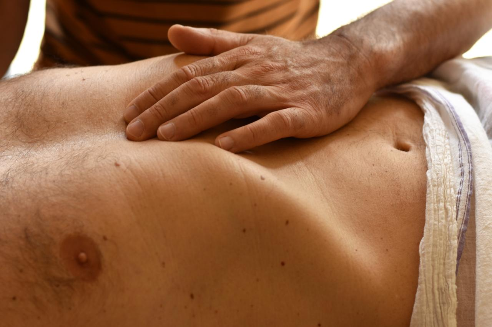
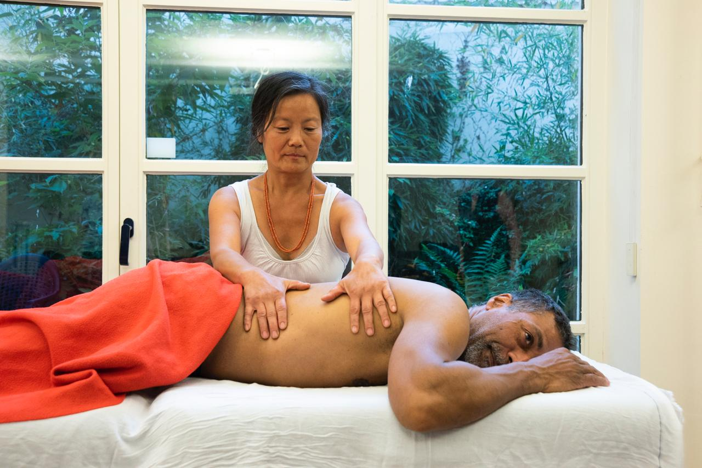
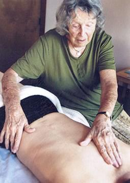
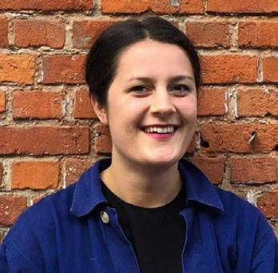

Ce que le corps porte, le corps peut le libérer.
La Méthode Rosen part d'un constat simple : nos tensions musculaires ne sont pas que physiques. Elles portent nos émotions enfouies, ce que nous n'avons pas pu exprimer. Au fil de notre histoire, le corps développe des stratégies pour faire face — des tensions chroniques s'installent pour nous protéger, pour contrôler, ou simplement pour tenir.
Par un toucher doux et bienveillant, la Méthode Rosen crée un espace sécurisant où le corps peut, enfin, se laisser aller. La détente profonde des muscles, des fascias et de la respiration permet de relâcher ce qui était retenu — et d'éveiller une conscience plus juste de qui nous sommes vraiment.
La méthode agit sur les plans métabolique, émotionnel, comportemental et mental.

Peut-être vous reconnaissez-vous ici…
Vous ressentez un mal-être difficile à nommer. Vos émotions semblent inaccessibles, ou au contraire débordantes. Peut-être traversez-vous un burn-out, une anxiété persistante, ou répétez-vous les mêmes schémas sans comprendre pourquoi. Peut-être avez-vous l'impression d'être coupé(e) de votre corps — et que la parole seule ne suffit plus.
La Méthode Rosen s'adresse à celles et ceux qui sentent qu'il est temps d'écouter autrement.

Un espace pour se poser, vraiment.
Vous êtes allongé(e) sur une table de massage, couvert(e) d'un drap, dans un cadre confidentiel et bienveillant. Le drap est écarté uniquement dans les zones travaillées.
Mon travail consiste à aller à la rencontre de vos tensions musculaires — guidé(e) par la lecture du corps, l'observation de la respiration et l'échange avec vous. Ce toucher attentif accompagne la prise de conscience de ce qui se passe en vous, à votre propre rythme.
Cette présence douce et sans jugement permet parfois la transformation de ce que l'on croyait immuable.

Qui suis-je ?
Je m'appelle Nora. La Méthode Rosen m'accompagne depuis de longues années — d'abord comme pratique personnelle, avant de devenir une vocation.
Me sentant limitée par la thérapie cognitive, je me suis tournée vers le travail corporel. Ce chemin a provoqué en moi des évolutions profondes : plus de bien-être, de confiance en moi, de bienveillance envers moi-même. Ce que je croyais être une démarche de soin personnel est devenu, au fil des formations, un nouveau métier. J'ai alors décidé de lancer ma pratique en cabinet en tant que praticienne certifiée.
Parallèlement, j'ai co-fondé l'Institut Méthode Rosen Belgique avec Anne Closset, avec pour mission de transmettre cette approche et de la démocratiser en Belgique.